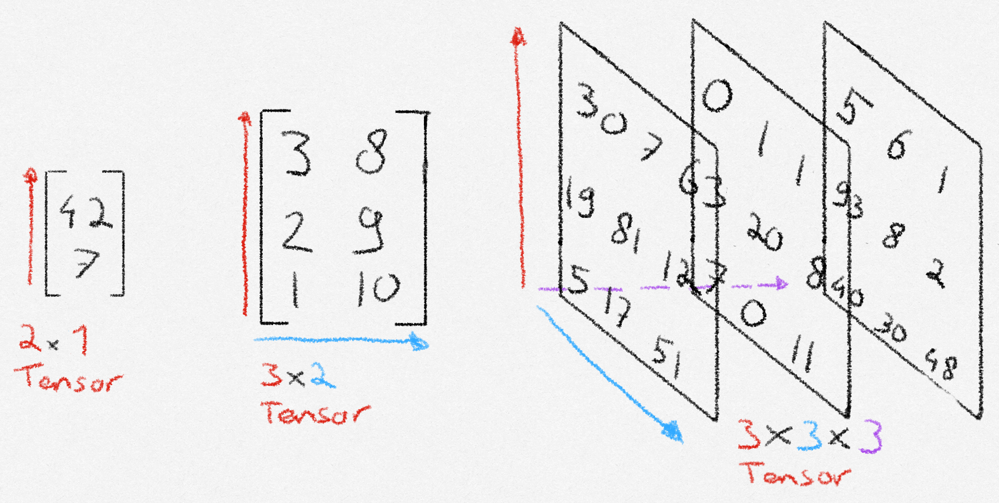

# Create a tensor from existing data
data = [[1, 2], [3, 4]]
tensor_from_data = torch.tensor(data)
print(tensor_from_data)
# Create a tensor with new data
ones_tensor = torch.ones((2,2))
print(ones_tensor)What is a tensor?
If you are familiar with math, it might help to think about a tensor as an n-dimensional matrix. If you are not familiar with math, or just want a better explanation, you can think of a tensor as a collection of structured numbers that we can do quick math with. A tensor has two properties: shape, and dimension. Shape means how many numbers the tensor has along each axis. Dimension means the amount of axes that the tensor has. In the picture below, the dimension corresponds with the number of colored arrows, and the shape is denoted below the tensor.

How to create a tensor?
First, import torch. After that we can create a tensor in two ways. From existing data, or with new data.
Show output
tensor([[1, 2],
[3, 4]])
tensor([[1., 1.],
[1., 1.]])How to do math with tensors?
There are three ways to perform a math operation in PyTorch. Lets see an example with addition.
Initialization code
# Initialize tensors to do math with
shape = (2,2)
tensor1 = torch.rand(shape)
tensor2 = torch.ones(shape)# 1. Python operators
tensor1 + tensor2
# 2. Built-in tensor method
tensor1.add(tensor2)
# 3. Output tensor
output_tensor = torch.zeros(shape)
torch.add(tensor1, tensor2, out=output_tensor)
Note
Currently, I am not sure about the difference between these three methods. I imagine that in a situation where we need to choose between these, one of the three method will feel most natural to use.
Some built-in tensor methods
There are over 1200 methods that we can perform on tensors. They can all be found at the PyTorch documentation. I skimmed through them and will give my beginner-opinion on which ones I believe will allow us to get a good start.
Mutating and indexing tensors
Knowing how to select and change individual elements as well as groups of elements is an essential skill to have, and easily learned. Indexing tensors works a lot like python list and numpy array indexing.
tensor = torch.rand((3, 3))
first_row = tensor[0]
first_two_row = tensor[:2]
first_col = tensor[:, 0]
first_two_col = tensor[:, :2]Show output
Entire tensor:
tensor([[0.8942, 0.8148, 0.9423],
[0.9512, 0.4707, 0.2919],
[0.4433, 0.1706, 0.8242]])
first row:
tensor([0.8942, 0.8148, 0.9423])
first two rows:
tensor([[0.8942, 0.8148, 0.9423],
[0.9512, 0.4707, 0.2919]])
first column:
tensor([0.8942, 0.9512, 0.4433])
first two columns:
tensor([[0.8942, 0.8148],
[0.9512, 0.4707],
[0.4433, 0.1706]])Lets now look at how to combine multiple tensors.
tensor_ones = torch.ones((3,3))
tensor_ones[:, 0] = 4
# Combine multiple tensors horizontally
wide_combine = torch.cat((tensor, tensor_ones), dim=1)
even_wider_combine = torch.cat((tensor, tensor_ones, tensor_ones), dim=1)
# Combine multiple tensors vertically
high_combine = torch.cat((tensor, tensor_ones), dim=0)Show output
Horizontal combine:
tensor([[0.8942, 0.8148, 0.9423, 4.0000, 1.0000, 1.0000],
[0.9512, 0.4707, 0.2919, 4.0000, 1.0000, 1.0000],
[0.4433, 0.1706, 0.8242, 4.0000, 1.0000, 1.0000]])
We can combine any number of tensors we want:
tensor([[0.8942, 0.8148, 0.9423, 4.0000, 1.0000, 1.0000, 4.0000, 1.0000, 1.0000],
[0.9512, 0.4707, 0.2919, 4.0000, 1.0000, 1.0000, 4.0000, 1.0000, 1.0000],
[0.4433, 0.1706, 0.8242, 4.0000, 1.0000, 1.0000, 4.0000, 1.0000, 1.0000]])
Vertical combine
tensor([[0.8942, 0.8148, 0.9423],
[0.9512, 0.4707, 0.2919],
[0.4433, 0.1706, 0.8242],
[4.0000, 1.0000, 1.0000],
[4.0000, 1.0000, 1.0000],
[4.0000, 1.0000, 1.0000]])Comparing tensors
Just like with the math operations, we have different notation options to choose from when comparing tensors.
tensor1 = torch.zeros((2,2))
tensor1[0][0] = 10
tensor2 = torch.ones((2,2))
# Check if two tensors are equal
torch.equal(tensor1, tensor2)
tensor1 == tensor2
# Check if one tensor is greater or equal to another tensor
torch.greater_equal(tensor1, tensor2)
torch.ge(tensor1, tensor2)
tensor1 >= tensor2Show output
Tensor 1 equals tensor 2:
tensor([[False, False],
[False, False]])
Tensor 1 >= tensor 2:
tensor([[ True, False],
[False, False]])More creation methods
Being able to instantiate a tensor with other values than ones and zeros is also possible.
# Create a tensor filled with the number 3
threes = torch.full(size=(2,2), fill_value=3)
# Create a tensor based on the shape of another
tensor_with_shape = torch.rand((4, 3))
tensor_zeros = torch.zeros_like(tensor_with_shape)Show output
threes:
tensor([[3, 3],
[3, 3]])
tensor_with_shape:
tensor([[0.5788, 0.5643, 0.9288],
[0.8084, 0.8708, 0.4467],
[0.6463, 0.9904, 0.3890],
[0.2245, 0.4862, 0.8490]])
tensor_zeros:
tensor([[0., 0., 0.],
[0., 0., 0.],
[0., 0., 0.],
[0., 0., 0.]])
Tip
The way we created tensor_zeros based on the shape of another tensor using zeros_like can also be done to the other ways we learned how to create a tensor, just by suffixing the method with _like.
Random numbers
shape = (3,3)
# Set an optional seed for reproducibility
torch.manual_seed(1)
# Random integers
rand_int = torch.randint(10, shape)
rand_int_lower_bound = torch.randint(8, 10, shape)
# Tensor values drawn from a distribution
normal = torch.randn(shape)
probability_tensor = torch.empty(shape).uniform_(0, 1) # The '_' suffix modifies the variable in place
bernoulli =torch.bernoulli(probability_tensor) # Pass a tensor with values of how likely a '1' is.
# Shuffle numbers from 0 to n-1
permutation = torch.randperm(10)Show output
rand_int):
tensor([[5, 9, 4],
[8, 3, 3],
[1, 1, 9]])
rand_int_lower_bound:
tensor([[8, 8, 9],
[8, 9, 9],
[8, 8, 9]])
normal:
tensor([[-1.1948, 0.0250, -0.7627],
[ 1.3969, -0.3245, 0.2879],
[ 1.0579, 0.9621, 0.3935]])
probability_tensor:
tensor([[0.7140, 0.2676, 0.9906],
[0.2885, 0.8750, 0.5059],
[0.2366, 0.7570, 0.2346]])
bernoulli:
tensor([[1., 0., 1.],
[1., 1., 0.],
[0., 0., 0.]])
permutation:
tensor([1, 9, 3, 6, 8, 0, 5, 2, 7, 4])
Thank you for reading! Note that these are just the basics. Now is your time to do some work yourself. Read the documentation, and try some basic operations. As a starter, this post did not cover the different linear algebra operations, even though they are very useful! You might also peek at the more technical GPU operations. See you on day 2!